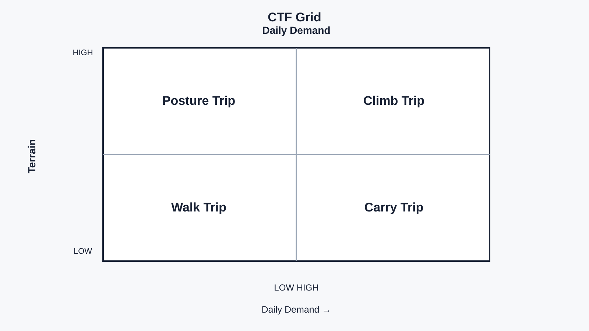
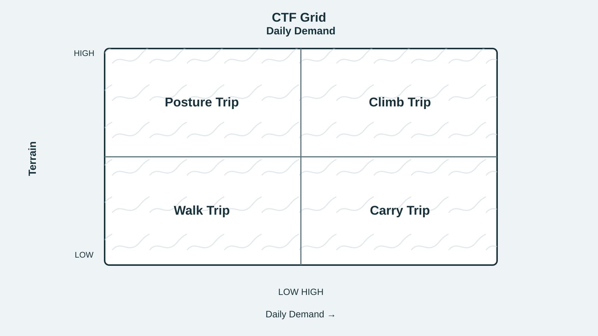
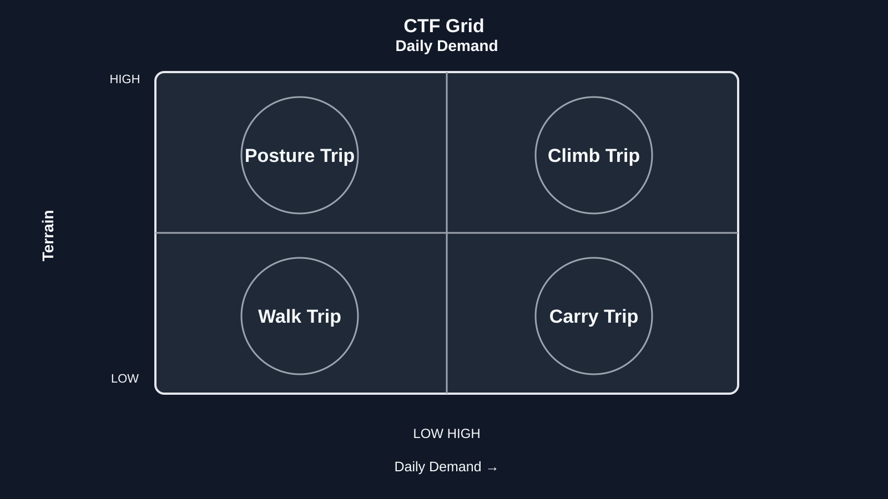

Three visual hypotheses. Please review at normal video size. The question is whether the graphic maps trip demands without rating the traveler.

Highest readability; lowest interpretation risk.

Tests whether a terrain cue improves recognition without competing with labels.

Tests video contrast; circles may imply targets or scores.